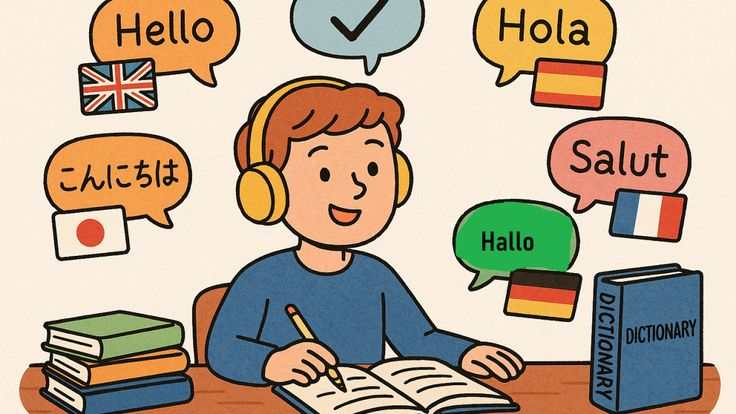

why being an interpreter is super fun?🤗
interpreters are languages Super hero🦸🏼♀️🦸🏼! because they help people who speak different languages talk and communicate with each other🗣. They can work in many different places, such as hospitals🏥, courts⚖️, schools🏫, airplanes✈️ even online from home!💻. Interpreters can also help people who are travelling all across the world🌍 to understand and talk with many people there!

but how can i become an interpreter?🤔
To become an interpreter, you become one by learning two languages so well that you can switch between them without even thinking 🗪! It starts with listening really closely to how people talk👂and practicing how to turn one person's story into another language so their friends can understand them🫂. As you get bigger, you spend lots of time reading books📚 and talking to people from different parts of the world 🌐 so you know all their special words✨.then you practice being a fast talker and a great listener at the same time, and once you're ready, you get a special badge that lets you help people in many different places!🌍